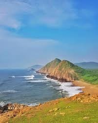

Ganavaram Beach
Ganavaram Beach is a beautiful sandy beach located near Vizag, known for its serene atmosphere and scenic views. It offers opportunities for relaxation, beach walks, and water sports.
Location: Near Vizag, Andhra Pradesh, India
Activities: Beach walks, sunbathing, water sports
Transportation: Easily accessible by road, located near major bus routes.